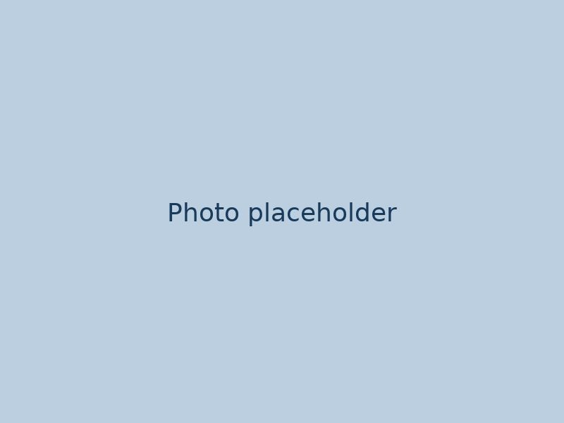
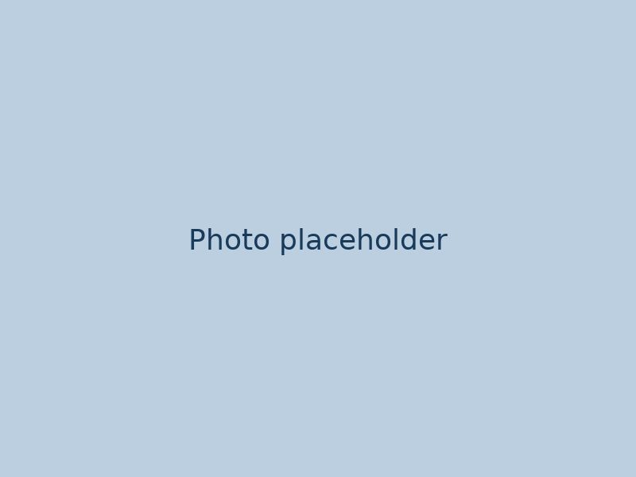
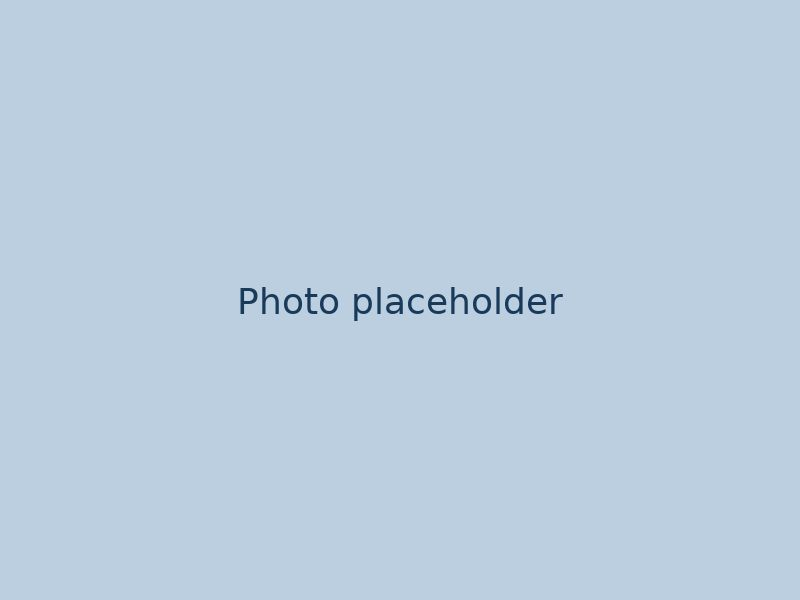

Monthly Photo Contest Vote
Welcome to the voting page for this month's Macomb Photo Club contest. This month's theme is Nature & Landscape. Below you will find the three finalists selected by our review committee from all eligible submissions. Take your time to look carefully at each photograph before casting your vote. Consider the composition, lighting, technical quality, and the overall emotional impact of each image as you make your decision. Each member may vote only once per contest period, so choose wisely!
Voting is open from the 25th through the last day of each month. Winners are announced on the first of the following month and will be added to our permanent Gallery of Past Winners. If you have not yet submitted your own photo for this contest, there is still time — head over to the Submit Photo page before the submission deadline on the 20th. Thank you for participating and for supporting your fellow photographers in our community. Every vote counts, and every vote helps a photographer know that their work is appreciated.
This Month's Finalists — Nature & Landscape
Entry #1 — "Morning Mist on the River" by Jane D.

A stunning early-morning capture of the Kishwaukee River blanketed in fog, with warm golden light just beginning to break through the tree line on the far bank.
Entry #2 — "Storm Over the Prairie" by Marcus T.

A dramatic wide-angle shot of a supercell thunderstorm developing over an open Illinois prairie, with vivid purples and oranges in the sky contrasting against the flat green landscape below.
Entry #3 — "Autumn Reflection" by Priya S.

A perfectly still woodland pond in peak fall color, with vivid reds, oranges, and yellows reflected so clearly in the water that the image appears nearly symmetrical.